|
Tarraco era la capital de la provincial de la Hispania Citerior y
disponía de dos foros, un foro “local” y el foro “provincial”.
El foro local de Tarraco se extendía junto a la basílica, en la
zona ocupada actualmente por la calle Gasómetre. Está actualmente delimitado por
las calles Cardenal Cervantes, Lleida y Gasòmetre.
|
Cuando accedemos al recinto
monumental se accede al interior de la nave central de la basílica rodeada por
las columnas que la separan de las naves laterales. La basílica es el edificio
del foro mejor conservado. Era un edificio de tres naves. Las columnas eran
originalmente catorce en cada lado longitudinal y cuatro en cada lado
transversal.
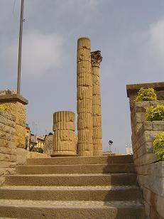
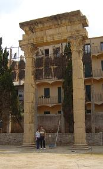
|
Su construcción se sitúa en la época del emperador Augusto. Una
vez construido el edificio debió sufrir algún problema de estabilidad, ya que
tuvo que reforzarse la columnata añadiendo unas semicolumnas adosadas a las columnas
de las esquinas, se puede apreciar en el único ángulo conservado de la
columnata.
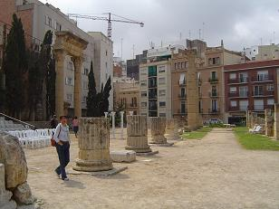
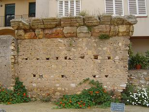
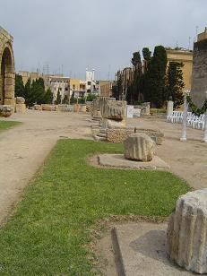
Se conservan las fundamentaciones originales de la mayoría de las
columnas y siete columnas originales situadas en uno de los ángulos, el resto se
ha reconstruido. Cuando entramos a la basílica en su lateral derecho se pueden
ver fragmentos de las cornisas originales del edificio. La basílica estaba
presidida por una sala más grande de 13’07 por 11’2 metros, situada en el eje
transversal del edificio. Era el tribunal desde el que el magistrado impartía
justicia,
el aedes augusti.
|
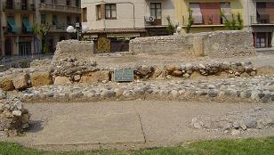 |
En el fondo de la sala se conserva un gran basamento de cemento que
probablemente sostendría una imagen del emperador. La sala se ha pavimentado
realizando una reproducción parcial con losas modernas. Se conserva una de las
tres columnas de otras reformas, la construcción de un vestíbulo en el interior
de la sala. En la basílica aparecieron diversos fragmentos de una divinidad
femenina, la Venus de Cnido, y restos de los relieves de un arco de triunfo. |
|
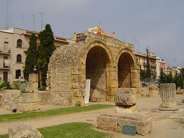
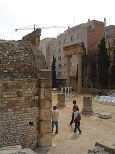 |
En uno de los lados longitudinales de la basílica se abrían 12
pequeñas estancias, de las que se conservan 9. Son unos pequeños espacios de
3’90 por 2’90 metros, que estarían vinculados a la administración de la ciudad o
quizás eran utilizados como locales comerciales, tabernae.
Se han reconstruido dos de estas tabernae, en su interior se
exponen restos escultóricos y epigráficos aparecidos en la basílica. Los
fragmentos de relieves formarían parte de un arco de triunfo que daría entrada a
la basílica.
|
|
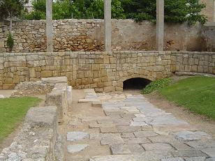 |
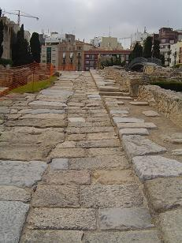 |
Detrás del muro de la basílica se conserva una cisterna. Este
depósito es anterior a la construcción de la basílica ya que uno de sus muros
recorta parcialmente la cisterna.
Una vez que atravesamos el puente metálico sobre la calle Soler,
nos encontramos con los restos de una antigua plaza con unas plataformas
cuadrangulares sobre las que habían instalados pedestales con
inscripciones que sostenían estatuas imperiales. Al lado de la plaza de las estatuas hay unas grandes
cimentaciones de opus caementicium. Por sus dimensiones han de ser las
cimentaciones de un edificio público y podrían pertenecer a un templo. |
Se ha conservado una calle empedrada y bajo su enlosado había una
alcantarilla que recogía las aguas residuales de las casas.
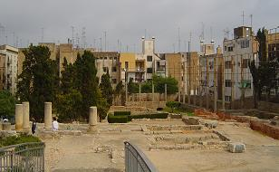
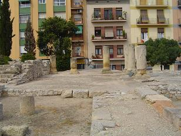
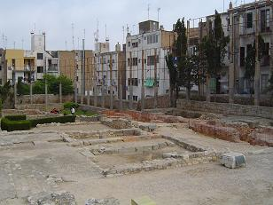
La calle delimita todo un lateral de una manzana de casas,
insulae; su anchura se corresponde con una medida romana; 1 actus, 120 pies
romanos, unos 35,5 metros. Los primeros restos de la manzana están formados por
un patio porticado con ocho columnas perteneciente a una casa. Detrás del patio
con columnas hay restos de otra casa de la que se conserva una habitación con
unos depósitos rectangulares destinados a almacenar aceite. Los depósitos están
excavados en la roca y están revestidos interiormente por unas losas de piedra
unidas a la roca con opus signinum, material muy impermeable utilizado en
depósitos y conducciones de agua.
|
En el foro se recuperaron diversos fragmentos de esculturas
pertenecientes a imágenes de emperadores y de miembros de la familia imperial
como: del Emperador Augusto, de Tiberio, de Marco Aurelio, de Lucio Vero, Nerón
Germánico y jóvenes togados. También aparecieron restos de una estatua ecuestre
hecha en bronce.
En el último tercio del siglo I durante el reinado de los
emperadores Flavios, se construyó a los pies del foro municipal un mercado.
Se ha recuperado una parte de esta plaza con cuatro de las
tiendas perimetrales del lado norte. En su interior se hallaron tinajas de
almacenamiento, un pozo y diversos depósitos.
La plaza estaba atravesada por un gran colector de aguas
residuales que se dirigía al puerto y se alimentaba de pequeñas alcantarillas y
de otro colector que procedía del foro de la ciudad.
|
En la segunda mitad del siglo IV se abandona esta parte de la
ciudad y no se vuelve a urbanizar esta zona hasta la segunda mitad del siglo XIX,
cuando se produce el ensanche y la construcción de la calle Gasòmetre.
|